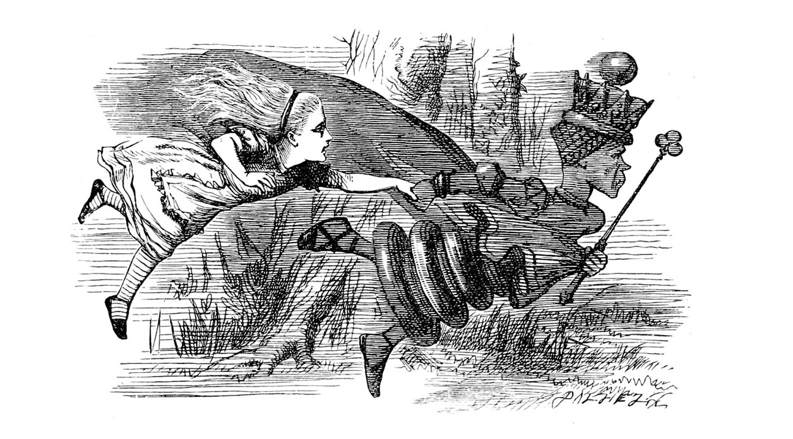
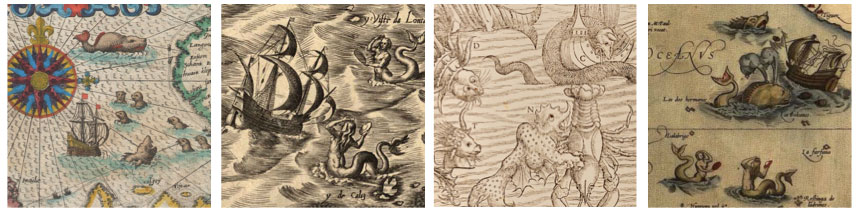
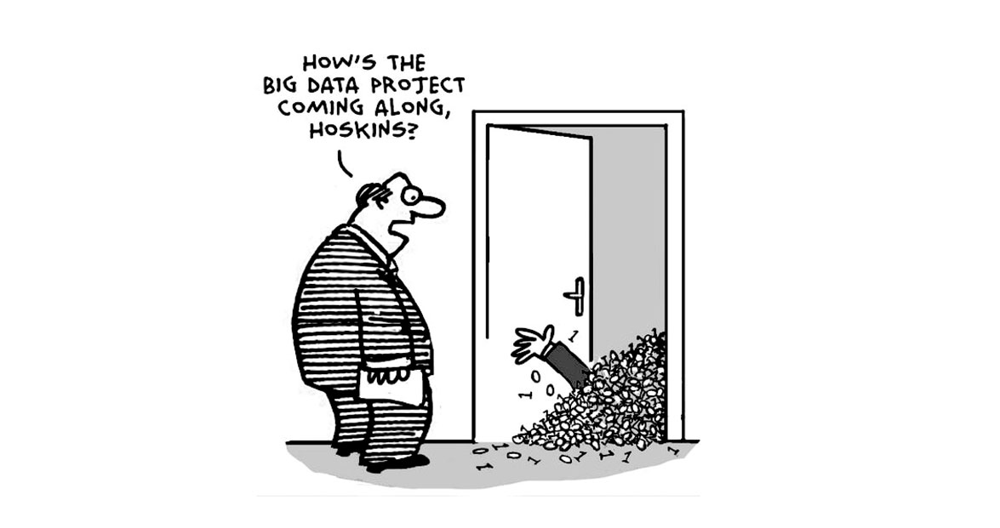

Exploring uncharted genomic territory using similarity search tools
The genomes of multicellular organisms are packed with dense layers of information. Consequently, genome annotation is an extremely challenging, long-term endeavour, and most published genome sequences are comprised of DNA that is incompletely understood in terms of its evolutionary origins and functional significance.
Excitingly, however, this means that much can now be discovered by exploring this 'uncharted genomic territory' in silico - in other words, by analysing genome sequence data using a computer. While experimental studies are usually required to characterise genome features at a functional level, comparative sequence analysis can often provide crucial insights and inform the design of experiments.
Sequence similarity searches, such as those implemented in the basic local alignment search tool (BLAST) program, can be powerful devices for investigating genome sequence data without relying on previously generated annotations. These searches, when applied strategically, can be used to recover new information. This approach is particularly useful for identifying hidden genomic information that is missed by automated genome annotation tools.
Buried treasure - how genomic information gets obscured
There are a number of phenomena that obscure ge evolutionary relationships between genes and other genome features. These include:
(i) Erosion/Decay. Genome features that become redundant for one reason or another will tend to decay, being gradually eroded and fragmented by mutation. The degenerated molecular sequences of previously functional genes (called ‘pseudogenes’) can contain useful information, even when they are non-functional.
Bryce Canyon: Geological structures show the impact of erosion over macroevolutionary time scales. Similar processes operate in genomes, which are in part shaped by mutational decay of redundant information.

A palimpsest - these are manuscript pages used in archaeology that have been written on more than once, with earlier writing incompletely erased. Overwriting can also occur at a genetic level, such that older information is obscured but not completely lost. Comparative sequence analysis can sometimes reveal these kinds of phenomena.
(ii) Evolutionary 'dynamism'. Whereas some genes undergo relatively measured change under natural selection, others evolve according to selective forces that strongly favour diversification, or are relatively ephemeral. These kinds of selective pressures may generate dynamic and unpredictable patterns of evolution (e.g. rapid change at specific loci, changes in gene structure and copy number) with the result that evolutionary history is - to a greater or lesser extent - obscured when examining contemporary sequences.
For example, the "Red Queen hypothesis", which takes it name from the character in Lewis Caroll's Alice in Wonderland, relates to the idea that species can undergo rapid underlying evolutionary change while existing in an outwardly stable relationship (i.e. 'running to stand still') as they each acquire adaptations and counter-adaptations in a competition for survival.
Red Queen dynamics: "A slow sort of country!" said the Queen. "Now, here, you see, it takes all the running you can do, to keep in the same place. If you want to get somewhere else, you must run at least twice as fast as that!"
(iii) Horizontal transfer. Occasionally, metazoan species acquire genes from one another, or from microbes (e.g. viruses and bacteria). Sequences that have arisen through horizontal transmission have an unpredictable distribution across genomes, and are often highly degraded by mutation. For these reasons, they are frequently absent from or incompletely captured by existing annotations.

Tangled trees - horizontal gene transfer creates complex web-like relationships between the genomes of different species, and makes the distribution of related genes somewhat unpredictable. Focussed investigations are often needed to identify horizontally transferred genes and map their relationships.
(iv) Transposition. Transposable elements (TEs) are DNA sequences that are capable of replicating their sequences within species genomes using either 'copy-and-paste' or 'cut-and-paste' mechanisms. The activity of TEs has profoundly shaped metazoan genome evolution and the accompanying genomic 'churn' has driven the accumulation of immense complexity.
For example, studies in multicellular organisms have shown that regulatory sequences involved in switching genes on or off during development are often comprised - at least in part - of transposons. This likely reflects a role for transposons in 'rewiring' gene expression networks over the course of evolution.
Mouse embryo at blastocyst stage. Genomic and experimental evidence indicates that the battle to suppress selfish DNA such as transposons during embryogenesis has been a source of dynamism and innovation in the genomes of mammals.
Exploring genomes in silico using sequence similarity search tools
Because genomes can evolve in a very dynamic way, reconstructing their evolutionary history can be hugely challenging, but also presents an interesting puzzle that can potentially be solved through the diligent use of comparative approaches. These kinds of investigations often rely heavily on similarity search tools.
Many biologist are familiar with similarity search tools - specifically BLAST- but typically only use them on an ad hoc or confirmatory basis - e.g. to answer questions like:
"Is this DNA/protein sequence what I think it is, and if not what is it?"
or
"Who else has published the sequence of this gene?"
However, similarity search tools are far more powerful than this. They are useful in many different scenarios: for example they can be used to: (i) quickly generate pairwise and multiple sequence alignments, (ii) perform rapid 'genotyping' of query sequences (e.g. assigning viral sequences to substrains), and (iii) help define the genetic structure of genome features (e.g. by identifying features such as inversions, repeats and conserved domains).
Moreover, similarity searches can be used to explore the continually expanding pool of molecular sequence data represented in genome sequence databases.

The complex world of genomes is only now beginning to be revealed - all kinds of weird and wonderful biology lurks in public genome databases, awaiting discovery. Similarity searches provide a means to explore.
For small-scale investigations of this nature, it may be sufficient to simply run ad hoc BLAST searches online via a web browser. However, larger-scale projects will typically require a more systematic approach, wherein locally held sequence data are systematically 'screened' using a well-defined set of query/probe and reference sequences. Since this will often entail large numbers of searches, some degree of automation is typically required.
Unfortunately, however, such automated screening procedures can be difficult to implement and manage. Firstly, exploring genomes in silico is often a heuristic, iterative process, and as such requires a degree of oversight. This is a significant challenge because screening can generate substantial quantities of output data that are difficult to interpret and manage without an appropriate analytical framework. An additional complication is that the pool of publicly available data is continually being updated, making it difficult to keep track of progress and maintain up-to-date information.

To address these issues, we developed an approach called database-integrated genome screening (DIGS), in which a similarity search-based screening pipeline is linked to a relational database management system (RDBMS), and the outputs are captured in a project-specific relational database. This database-integrated approach provides a robust basis for implementing automated screens that proceed in an efficient, non-redundant way. It also allows screening data to be analysed and managed using structured query language (SQL) - a well-established, powerful approach for querying relational databases.
Finally database integration provides all the advantages of an RDBMS with respect to features such as data recoverability, multi-user support, and networked data access.
What has DIGS been used for, and what can it be used for?
DIGS can be used to investigate any genomic feature with sufficient sequence conservation.
The concept for DIGS grew out of early investigations of endogenous retroviruses (ERVs), and I have found the approach extremely useful to search for ERVs and other kinds of endogenous viral element (EVE). However, this reflects only my own personal interest in research topics related to virus evolution - the potential uses of the approach are much broader.
In fact, my own use of DIGS has not been restricted to EVEs, increasingly I've been using DIGS to investigate the evolutionary history of rapidly evolving gene families in mammals, particularly those that interact with viruses. For some background on these projects, please visit the Virus-Host Interface project page. For more information on the ongoing use of DIGS to investigate EVEs, please see the DIGS-for-EVEs project page.
The current rate of genome data accumulation means that there are now far more interesting things to explore than there is time to explore them. For example, I think that the DIGS framework would be very well-suited to explorations of transposable element diversity, but I have not explored this except to the extent that it overlaps with ERV research.